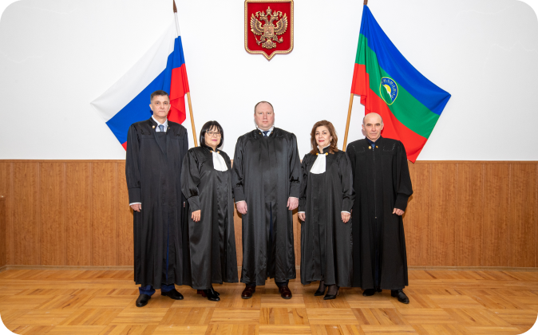
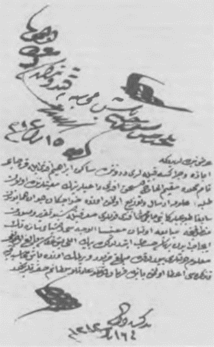
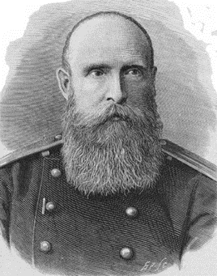
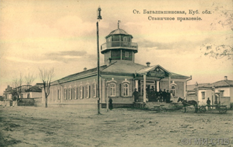
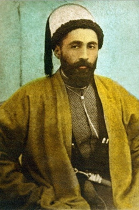
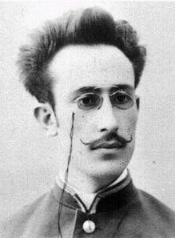

Верховный Суд Карачаево-Черкесской Республики
Заседание Президиума Верховного Суда КЧР

Судебная коллегия по административным делам Верховного Суда КЧР
Судебная коллегия по гражданским делам Верховного Суда КЧР
Судебная коллегия по уголовным делам Верховного Суда КЧР
Судьи Верховного Суда КЧР
История развития системы правосудия и судопроизводства на территории Карачаево-Черкесской Республики
Ранняя история
История судопроизводства на территории Карачаево-Черкесии уходит своими корнями в седую древность, она
тесно
связана с историей Северо-Кавказского региона и народов, его населяющих. Еще античные авторы отмечали
этнолингвистическую дробность региона. Арабский географ X в. Масуди называл Северный Кавказ «горой
языков».
В эпоху раннего бронзового века (нач. 4-го – нач. 3-го тыс. до н. э.) современная Карачаево-Черкесия
находилась в сфере Майкопской археологической культуры, которая является яркой страницей истории
искусства
первобытного общества эпохи бронзы. Здесь развивается строительство, ювелирное дело, металлопластика, а
также металлическая круглая скульптура.
В эпоху позднего бронзового - раннего железного веков (2-е тыс. до н.э. – IV в. до н.э.)
современная Карачаево-Черкесия находилась в сфере Кобанской археологической культуры, которая считается
связующим звеном между культурами бронзового века и современными этническими группами на Северном
Кавказе.
Население, оставившее памятники кобанской археологической культуры, имеет преемственность с другими
древними
и современными этническими группами Кавказа.
Во II в. до н. э. на правобережье р. Кубань в среду оседлого земледельческого меотского населения
проникают
сарматы, в начале I тыс. н. э. – аланы. В этот период аланская культура наряду с культурой автохтонных
племен горной зоны доминировала в Центральной части Кавказа от верховьев Кубани (в бассейне верхних
притоков
Кубани и предгорно-плоскостных районах бассейна р. Терек).
Судопроизводство в период гуннского владычества (IV-V вв.)
В 70-е гг. IV в. н.э. началось массовое вторжение гуннов на Кавказ, в первую очередь на земли кочевых
аланских племен, которые отступили на правобережье Терека и в верховья Кубани. С IV в. до середины V в.
регион находился под властью гуннов.
Уровень развития права гуннов характерно для протогосударства, поздние нормы права носят элементы
заимствования. В большей степени это связано с гражданско-правовыми отношениями, в то время как семейные
обычаи оставались патриархальными и почти не изменились. О нормах уголовного права гуннов известно
немного.
Гунны считали взаимосвязанными преступления против орды, кагана и веры. Виновный подлежал смертной
казни.
Так гунны казнили своего кагана Грод за то, что он принял христианство. Вскоре эта норма устарела,
поскольку
знать стала переходить из язычества в другие религии. В любом случае основным наказанием у кочевников
была
смертная казнь. Вместе с тем, появились и штрафные санкции: они налагались за преступления против
кочевой
державы (сепаратизм, восстание). В 630 г. «князь севера ввел пеню: за одно преступление тысячу, за два –
десятки тысяч». Правда, неизвестно в какой форме была новелла: в устной или в письменной. Можно лишь
констатировать, что кочевники VI—VII вв. еще не умели систематизировать преступления и наказания.
После распада гуннской державы в V в. в Северном Причерноморье и Восточном Приазовье вплоть до Кубани
сложился союз различных тюркоязычных племен, которым гунны передали элементы своей государственности.
Несмотря на распад державы, вплоть до VII в. остатки гуннских племен продолжали играть важную роль в
социально-политической истории региона.
Судопроизводство в период Хазарского каганата (VII - XI вв.)
В течение последующих трех веков, c VII по X вв., самой могущественной державой региона был Хазарский
каганат. В 70-х годах VII века хазары покорили часть булгар под начальством Батбая, которые составили
группу
подвластных хазарам Кубанских булгар. Каганат просуществовал до второй половины XI в. и перестал
функционировать как политическая единица после поражения от хорезмийских войск. К концу XII века хазары
исчезают со страниц истории не только как политическое образование, но и как народ.
В период хазарского владычества на Кавказе судопроизводство приобрело высокоразвитую религиозно-правовую
традицию. Хазарский хан принял веру своей матери, стал иудеем и получил титул кагана. В Хазарском
каганате
право не признавалось отличным от религии, юридическое значение имели религиозные акты, среди которых
главенствующее место занимали Ветхий завет, Тора и Галаха. Также среди источников права назывались
обычаи,
традиции, «понимание» и «дело», к которым прибегали при вынесении судебных решений. Уголовно-правовые
положения права Хазарского каганата базировались на признании грехом любого нарушения закона, то есть
религиозных актов. Наказанием за грех служила смерть. Деяния, не нарушавшие «закон», не влекли
ответственность. Наряду со смертной казнью применялись выкуп, телесные наказания (истязания) и
заключение в
темницу. К наказуемым смертью преступлениям религиозного (в узком смысле) характера относились
идолопоклонство, волшебство, богохульство, произнесение имени Божия, клятвопреступление, нарушение
святыни,
субботы и других праздников, пренебрежение религиозными обрядами. Тора предписывала побивание камнями
идолопоклонников, смертью каралось обращение к волшебникам, Талмуд устанавливал смертную казнь для
еретиков,
изменников и отступников, которых предписывалось «сталкивать в колодезь, но не вытаскивать оттуда». К
преступлениям против государственной власти относились оскорбление представителей власти, злоумышление
против царя и восстание (мятеж).
Хумаринское городище (Схимар,
Схимарис) VIII–X вв., реконструкция
Тора запрещала злословить (оскорблять и клеветать) о судьях и других представителях власти: «Судей не
злословь и начальника в твоем народе не поноси» (Исход, 22: 28). Закон требовал повиновения властям: «А
кто
поступит так дерзко, что не послушает священника… или судьи, тот должен умереть» (Второзаконие, 17:
12–13).
В то же время не исключалась и ответственность самих священников, а также ответственности кагана за
«введение народа в заблуждение». Уголовному праву Хазарии были известны законы о воинских преступлениях.
Невыполнение боевого задания, бегство от противника, каралось смертью. Исключение при наличии смягчающих
обстоятельств делалось только для предводителя и его заместителя, которые были представителями правящей
верхушки Хазарии.
Несмотря на развитую систему судопроизводства, в многоплеменной Хазарии, где население исповедовало
разные
религии (ислам, христианство, иудаизм и языческие культы), все же не сложилось единого государственного
права и единой системы судопроизводства. Арабские авторы сообщают, что при царе хазаров в столице
каганата
Атиле (Итиле) находилось семь судей (кади) - два для мусульман, судивших по шариату, два для иудеев
(хазар,
принявших иудаизм, и евреев), судивших в соответствии с Торой, два для христиан, которые вели суд по
Евангелию, и один для язычников (славян, русов и других идолопоклонников), который судил согласно
языческим
обычаям, т.е. «по велениям разума». Между этими судьями и царем имелся посредник («сафир»), который
передавал решения судей царю, и после утверждения их последним они приводились в исполнение. Такая
практика
существовала в Хазарии IХ-Х вв. До этого верховным судьей был хазарский царь – хакан (каган), которого
источники называют судьей («шофет»). Иноземцы были не просто подданными хазарского царя: в своих
внутренних
делах они пользовались судебным иммунитетом, который выглядит гораздо внушительнее, нежели право
христиан и
иудеев судиться по своим законам в Арабском халифате.
Судопроизводство в период Аланского царства (XI - XIII вв.)
В XI в. с падением Хазарского каганата усилилась гегемония Алании в центральной части Северного Кавказа.
Аланский царь Дорголель имел династические связи с Византией и Грузией. В это же время усиливаются
позиции
христианства только в Алании, но и у части адыгов.
Кафедральный собор Аланской
епархии в X—XIII веках нашей эры. Хурзук,
Карачаево-Черкесия
Аланское царство унаследовано не только политическую доминанту Хазарского каганата, но и отчасти ее
систему
судопроизводства. Имея тесные политические и культурные связи с Византией, Алания контаминировала
хазарско-иудейскую традицию со своей этнокультурной практикой и христианской догматикой, придав развитию
судопроизводства новый импульс. Соединение различных этнических и конфессиональных традиций определило
то
обстоятельство, что и по прошествии веков некоторые горские народы сохранили в своих языках хазарское
название судов, восходящее к тюркскому тёре/торе – третейский суд, и аланское ныгыш/ныхас/хасэ,
восходящее к
иранскому «слово», «речь» – для мест проведения судебных заседаний.
Организация аланского общества характеризовалась чертами военной демократии. В начале IV в. Аммиан
Марцеллин
отмечал, что «судьями они (аланы) выбирают тех, которые отличаются долгое время на войне». Компетенции
судей
и судов народных собраний (ныгыш/ныхас) были слабо разграничены. При этом суд ныгыш рассматривал не
только
общие дела и имущественные тяжбы, но и преступления князей. Ныгыш старался урегулировать тяжбы в
досудебном
порядке посредством присяги или клятвы. Некоторые элементы суда и процесса алан, например клятвы и
гадания
на суде, восходят к персидской морали или аналогичны скифскому обряду. Другие особенности суда и
процесса
тождественны правовым обычаям хазар и других тюркских народов.
Субъектами права по аланским обычаям были все свободные члены общества; женщины и дворовые люди были
ограничены в правосубъектности, рабы в качестве субъектов права не рассматривались. Дееспособность
определялась по достижению совершеннолетия или приобреталась в соответствии с боевыми заслугами.
Объектами
права являлось движимое имущество. Недвижимое имущество считалось собственностью общины и не могло
выступать
в качестве объекта гражданского оборота. В гражданском праве алан применялись присяги, клятвы и
заговоры.
Известна символика, связанная с дарами, обменами. С гражданским правом непосредственно связан и обычай
гостеприимства, где субъектом обязательственных отношений был не столько гость, сколько хозяин дома,
приютивший путешественника. При этом хозяин дома нес солидарную ответственность за действия, совершенные
гостем. Обязательственное право тесно переплетено с языческими обрядами. Например, имело место
обязательство
приносить жертву богам. Жертва приносилась с целью ниспослания богами урожая всему обществу. Если жертва
не
приносилась, виновный нес ответственность за несоблюдение обычаев, за обиду богов и предков и за вред,
причиненный обществу. Низкий уровень частнособственнических отношений соотносится с договорным правом.
Договоры у алан были устными и скреплялись клятвами сторон. Основной общественной единицей у алан была
община, в которой были слабо развиты товарно-денежные отношения, поэтому основным предметом
регулирования
были отношения в семье-патронимии.
Адатное судопроизводство послеаланского периода (XIII – первая половина XIX вв.)
После нашествия монголо-татар и завоеваний Тимура в 1220–1223 гг., 1239–1240 гг. Алания перестала
существовать как политическая единица, ее население частью было уничтожено, частью вовлечено в военные
походы, выселено, загнано в горы. Падение Алании привело к формированию нового этнического облика и
общественного устройства средневекового Кавказа.
Башня Мамия-кала в ауле Хурзук.
Башня Адиюх в ауле Хабез
В послеаланский период истории нормы поведения и внутренняя жизнь народов, населяющих нынешнюю
Карачаево-Черкесию, определялись обычным правом с большим влиянием норм родового строя (присяга,
соприсяжничество, кровная месть).
По сообщению смотрителя Екатеринодарского окружного училища войскового старшины А.А. Кучерова, «суд у
всех
кавказских горцев по древним их обычаям есть словесное примирительное разбирательство спорящих лиц по
добровольному согласию оных через избираемых ими судей, посредников их».
Источниками права выступали нормы адатов, т. е. обычного права, которые складывались на протяжении
столетий.
Другим источником права являлся прецедент, установления адатного суда (тёре, торе - у карачаевцев и
ногайцев, хасэ - у черкесов), которые со временем могли приобретать силу адатов.
В русских судебных документах адатный суд назывался также медиаторским, посредническим или третейским.
Адатный суд заседал в составе от трех до семи человек. Главными качествами судей были безупречность
поведения и суждений, весомость мнения на основе хорошего знания народных обычаев и традиций. Адатные
суды
не знали строгого иерархического деления, в состав судов входили самые опытные и влиятельные
представители
всех сословий. Но все же ведущую роль в традиционной системе судопроизводства играли представители
«белой
кости» (ак сюек). Даже в последующее время в шариатском суде с непременным участием народного эфенди,
первое
место в суде принадлежало княжескому сословию (таубий/бий, мурза, пши, аха), которое изначально являлось
особой военно-аристократической прослойки населения. В этом проявлялась историческая преемственность –
отголоски аланской военной демократии, где судьями являлись военные предводители.
В Карачаево-Черкесии по аланской традиции место заседания суда именовалось ныгыш – у карачаевцев и хасэ
– у
черкесов. По свидетельству доктора права, ординарного профессора Ф.И. Леонтовича (1844 г.) «судебное
место
зовут нагиш, оно состоит из камней вроде стульев, поставленных кругом, никто не помнит, кем. Это
судебное
место существует везде, даже в аулах. Там избранные почетные старики из всех классов каждый день бывают
для
выслушивания жалоб просителей и оправдания ответчиков, после чего решают дела по обряду. Это место даже
зимою остается судебным; в нем расправу делают непременно каждый день».
Адатное судопроизводство предполагало при разбирательстве обязательное присутствие истца и ответчика, а
также свидетелей (шагъат) и доказчика (айрахчы); в качестве защитника (ёкюль) ответчик мог привлекать по
своему усмотрению любого человека. Женщин на суде, как правило, представляли мужчины - их
уполномоченные.
Характерной особенностью суда по адату являлось то, что поводом для начала судебного разбирательства
могла
служить только жалоба непосредственно заинтересованного лица. В основу деятельности суда был положен
принцип
гласности.
Доказательствами служили показания очевидцев и свидетелей, собственные признания без принуждения,
вещественные доказательства. Суд принимал, как правило, лишь показания мужчин, а показания женщины
допускались в тех только случаях, когда по данному делу не было свидетелей - мужчин, причем показания
женщины должны быть подтверждены кем-либо из ее родственников. Существовала и такая норма как
«тажге-шагъат», когда показания двух свидетелей, повторяющих слова благонадежного очевидца, принимаются
за
показание одного очевидца. Адатные суды могли не только вводить новые адаты, но и отменять устаревшие.
Функции исполнения судебных решений выполняли в зависимости от значимости дела, олий и бегеулы – у
карачаевцев, бейголи и пшикеу – у черкесов. Бегеулы доводили до населения информацию о принятых органами
власти решениях, оповещали членов тёре и хасэ о предстоящих заседаниях.
Наказание имело своей целью возмещение вреда (удовлетворение чувства мести) и устрашение (генеральная
превенция), причем при назначении наказания за совершение наиболее тяжких преступлений зачастую
применялся
принцип объективной ответственности. Основным видом наказания являлись композиционные выплаты,
налагавшиеся
в том числе и за убийство. Кроме того, в обычном праве наряду с кровной местью применялся и такой вид
наказания, как изгнание преступника из рода. Известные российскому праву наказания (смертная казнь,
физические наказания, лишение свободы) в конце XVIII - начале века XIX в. не применялись, т.к.
находились в
противоречии с правовыми и этическими нормами местных народов, но уже со второй половины XIX в. началось
их
постепенное внедрение в правовую систему горцев.
Для предупреждения случаев неповиновения адатному суду были предусмотрены строгие меры, начиная от
публичной
диффамации посредством «камня позора» (налат таш) и кончая изгнанием из общества или даже смертной
казнью в
более позднее время. С этой целью был создан своего рода «аппарат принуждения» - особый отряд
стражников-мыртазаков, а также подземные помещения для содержания преступников, так называемые
«джер-юй»,
«зиндан».
Переход к исламскому судопроизводству (XVIII в.)
В XVI–XVII вв. Северный Кавказ стал предметом борьбы между Османской империей и Ираном, оспаривавших
господство в Передней Азии и на Ближнем Востоке.
Со 2-й половины XVI в. на политической арене Северного Кавказа появилась еще одна сила – Московское
царство.
В 1556 г. хан Большой Ногайской орды Исмаил принял русское подданство вместе с большинством ногайцев. В
ноябре 1552 г. с просьбой принять их в русское подданство в Москву прибыли два черкесских князя. В
августе
1555 г. приехала делегация во главе с князьями Сибоком, Ацымгуком и Тутарыком, от имени всех жителей
земли
Черкесской просившая о помощи против турецких и крымских властителей и о вступлении в русское
подданство. В
1614–1615 гг. царю Михаилу Федоровичу присягнули западные черкесы, в 1643–1645 гг. – абазины. В 1783 г.
акт
принятия подданства России был принят карачаевцами. Однако это были лишь первые шаги на пути
инкорпорации
народов Карачаево-Черкесии в территориальную и политическую структуру Российской империи.
Стремясь обезопасить себя от притязаний Крымского ханства кабардинские князья, а следом и другие
общества
Северо-Западного Кавказа стали прибегать к нормам шариата. Так, благодаря этой политике, одной из
законных
причин отказа выплачивать дань рабами во время конфликта с Крымским ханством в 1708 г. стало соотнесение
Кабарды с дар аль ислам – землей ислама.
В 1791 г. российская военная администрация признавала, что «вся судебная часть начала переходить в руки
мулл».

О деятельности кадия
Исхака Абукова в 1797 г. и открытии
им медресе в Карачае
Шариатское движение имело массовый характер, в него включились часть абазинов, бесленеевцев, чегемских
карачаевцев, среднего и мелкопоместного дворянства. Во главе шариатского движения стояли кабардинский
князь
Адиль-Гирей Атажукин и эфенди Исхак Абуков.
Эфенди Исхак Абуков - потомственный кабардинский дворянин абазинского происхождения, получив религиозное
образование, приложил немало усилий по распространению ислама на Северном Кавказе. Уже в 1764 г. он
получает
фирман турецкого султана, согласно которому ему предписывается распространить ислам среди карачаевцев.
Восставшие выступали за учреждение духовного суда вместо родовых, за всеобщее равенство во имя религии.
Российская администрация была вынуждена пойти на замену родовых судов и расправ шариатскими судами
мехкеме
(араб. махкама - суд, трибунал), что привело к усилению влияния мусульманского духовенства на
политическое
положение в Кабарде, Горском Карачае и частично в Дигории.
Преследование со стороны российских властей заставили Исхака Абукова покинуть Кабарду и переселится в
Карачай. Свою деятельность Исхак-эфенди вел в Карачае с 1800-го по 1807 гг., когда жил среди беглых
кабардинцев сначала на Малом Зеленчуке, а затем в Тебердинском ущелье.
Адыль-Гирей Атажукин и Исхак Абуков внесли весомый вклад в реформирование древней правовой культуры
адыгов,
абазин и карачаево-балкарцев.
Значительную роль сыграли также представители Дагестана, которые прибывали в общества Карачаево-Черкесии
с
миссионерской деятельностью, открывали здесь мусульманские школы, в которых обучали арабской грамоте и
чтению священной книги – Корана. Среди них: Али бин Асадулла (Али Асадуллаевич) и его ученик
Хасан-эфенди,
Осман-хаджи, Адам Абдул-Кадырович (Кумук-апенди), эфенди Имам-Шапия Габиев.
В результате шариатского движения в горских обществах родовые суды и расправы были упразднены, их
заменили
духовные суды – мекхеме при частичном сохранении медиаторских (адатных) судов. При мехкеме, помимо
собственно суда, могла действовать та же мечеть, духовное училище, тюрьма или яма для заключения
преступников, провиантский магазин, конюшня, помещения для судей, начальства и военной стражи.
В 1812 г. подполковник А.М. Буцковский описывал шариатскую систему у черкесов как вполне сложившуюся.
Так, о
бесленеевцах он сообщает, что «они все магометане, имеют своих духовных и шариат. В видных только
случаях
относятся в вышеупомянутое мегкемэ, главное судилище».
На Верхней Кубани при впадении в нее р. Джегуты находились две мечети, которые отмечены на российской
военной карте 1804 г., данное мехкеме обслуживало кабардинцев, бесленеевцев, абазин и карачаевцев.
Шариатское судопроизводство (конец XVIII – первая половина XIX вв.)
Шариатское судопроизводство при мехкеме осуществлял в основном кадий (от араб. шариатский судья), который
одновременно являлся и главой духовенства. Кадии разбирали все дела по шариату на основе мусульманских
сборников законоуложений и толкований норм коранического права, за исключением споров представителей
разных
сословий, разрешавшихся на основании адата. Примирительное судопроизводство именовалось маслахат.
Чрезвычайно большую роль в судопроизводстве играла присяга (ант). Исследованиями зафиксировано множество
традиционных видов присяги – языческих и основанных на симбиозе с христианскими постулатами и
символикой. С
исламизацией вошло в практику и присягание на Коране, которое ограничивалось следующим обрядом: люди
собирались в мечети, мулла брал в руку Коран, затем дающий клятву положив руку на Коран свидетельствовал
именем Аллаха. Присяга часто выступала и в качестве доказательства.
Судебная практика народов Карачаево-Черкесии реализовывалась в рамках как шариатских (мехкеме), так и
адатных судов (тёре/хасэ), которые сосуществовали на протяжении конца XVIII – первой половины XIX вв.
Известны случаи, когда разбирательства дел начинались в адатных судах, а затем переносилось в шариатские
суды.
Деятельность горских словесных судов (вторая половина XIX - в.)
Стремясь включить народы Северного Кавказа в правовую систему Российской империи, царское правительство
приступает к проведению судебно-адмнистративной реформы.
В 1860 г. народы Карачаево-Черкесии вошли в преобразованную из Правого крыла Кавказской линии Кубанскую
область, которая с 1865 г. делилась на пять военно-народных округов: Псекупский, Лабинский, Урупский,
Зеленчукский, Эльбрусский.
30 декабря 1869 г. был обнародован указ императора о введении в Терской и Кубанской областях «Временных
правил горских словесных судов», которым адатные и шариатские суды были преобразованы в горские
словесные
суды до полного распространения здесь российского законодательства. Адатное и мусульманское право в XIX
в.
воспринимались царским правительством как относительно рациональные нормативные подсистемы, имевшие
собственную ценность (направленную на охрану и защиту правового порядка) и потому получившие со стороны
государственной власти легитимацию, что обусловливало их включение в российскую правовую систему.
В 1871 г. окружная система административно-территориального устройства была заменена на уездную. Во
главе
Баталпашинского уезда был назначен Николай Григорьевич Петрусевич, продолживший курс на приобщение
горцев к
общественной жизни империи.
Создание горских словесных судов имело целью постепенное внедрение в судебную практику горцев норм
российского законодательства. В связи с этим основными направлениями реформы судопроизводства было
ослабление шариата и модернизация адатного права.
Судебные реформы изымали суд из-под влияния местной горской верхушки и мусульманского духовенства,
делали
его бессословным, гласным.
В ведомстве Баталпашинского горского словесного суда находилось 34 аула Баталпашинского отдела. Горское
население отдела отличалось разнородностью и большим количеством языков. Отдел населяли следующие
горские
народы: кабардинцы, абазины, карачаевцы, бесленеевцы, ногайцы и абадзехи.
Иван Семенович
Кравцов. Почетный судья
Баталпашинского отдела

Николай Григорьевич
Петрусевич — русский генерал-
майор, начальник Эльбрусского
округа, затем начальник
Баталпашинского уезда
Баталпашинский горский словесный суд состоял из председателя, назначаемого администрацией, депутатов
(судей)
и одного кадия. Члены горских судов избирались на три года двухстепенными выборами. Каждое сельское
общество
выбирало доверенных, а они после принесения клятвы закрытым голосованием избирали депутатов и кадия.
Окончательное утверждение членов суда производилось начальником Кубанской области. По действующим
правилам
того времени председателем горского словесного суда могли быть назначены начальник округа, его
заместитель,
заместители атамана отдела, начальник участка. Горский словесный суд был более загружен делами, чем
другие
суды Кубанской области. Из-за отсутствия опытного руководителя дела в этом суде шли очень медленно. Из
года
в год большое количество дел оставалось нерассмотренным и переносилось на следующий год.
С учетом специфики местных условий (этического состава населения и территориальной доступности
правосудия)
был открыт 2-й Баталпашинский горский словесный суд. Положение его отличалось от положения других судов.
Изначально было задумано создать его временно, сроком на два года, на средства карачаевского населения.
Но
просуществовал он значительно дольше ввиду «особой наклонности горцев к тяжбам, с постановкою большого
количества свидетелей, вследствие чего, за неявкою некоторых свидетелей, дела отлагаются до другой
очереди,
чрез что происходит непроизводительная трата времени», также учитывалось, что «суд должен тратить время
на
выезды из Бибердовского аула, т.е. места постоянного нахождения, в Хумаринское укрепление для открытия
временного суда для карачаевцев, а также и на своевременную отписку по текущим делам, достигающую до 6
тыс.
нумеров исходящих бумаг» и что «в составе горского словесного суда в Баталпашинском отделе кадии и один
член
суда принадлежали по своему происхождению к абазинскому племени горцев и не могли быть компетентными
судьями
в решении вопросов по адату карачаевского населения».

Баталпашинское станичное
правление

Кадий горского
Баталпашинского
словесного суда Джагафар
Хачиров (1861-1938 гг.)
Рисунок 7. Слева- Магомет-
Гирей Мансуров (1877-1934 гг.)
Деятельность горских словесных судов была основана на нормах обычного права и нормах российского
законодательства, в том числе и не свойственных правосознанию местных народов судебных норм, например,
тюремного наказания. Эти суды могли разбирать по адату мелкие уголовные преступления против личности
(семейные ссоры, сельские драки, публичные оскорбления женщин) и уголовные преступления против
собственности
(обман, утайку денег, воровство), если сумма иска не превышала 50 рублей. Им были подсудны также
уголовно-хозяйственные преступления, совершенные на землях общины (потравы, нарушения единого
сельскохозяйственного оборота). Кроме того, они могли разбирать по шариату гражданскосемейные тяжбы,
сумма
иска которых не превышала 100 рублей. Маловажные дела решались аульными судами.
В отличие от дореформенной эпохи решения словесных судов не были окончательными. Они могли обжаловаться
в
месячный срок в окружных народных судах, созданных при начальниках округов. Им же были переданы адатные
иски, изъятые из ведения сельских словесных судов, включая тяжелые уголовные преступления против
личности
(ранения, убийства, похищения женщин) и крупные уголовные преступления против собственности (обман,
утайка
денег, воровство на сумму более 50 рублей, случаи разбоя и грабежа).
Наряду с элементами русского судопроизводства в горских судах имел место целый ряд пережиточных норм -
принесение присяги, не признание показаний женщины и др.
Заседания в горских судах должны были проводиться ежедневно или в установленные начальником области
сроки,
за исключением воскресных и табельных дней и времени полевых работ, также суды не собирались по пятницам
и
во время праздника Курбан-байрам.
Председателями Баталпашинских горских словесных судов в разные периоды времени были Г.С. Петров, Б.
Филимонов (-1900), И.К. Литевский. Судьями были депутаты Мусса Ахлов и Идрис Батчаев, кандидаты к этим
депутатам Якуб Карданов и Таугери Урусов, кадиями: от горцев - хаджи Джагафар Хачиров и хаджи Исса Ионов
и
другие.
С 1871 г. кадием 2-го горского словесного суда Баталпашинского уезда был Магомет Байрамуков (1823-1898
гг).
Горский словесный суд руководствовался временными правилами, утвержденными 18 декабря 1870 г. Помимо
выполнения функций главного шариатского судьи, Магомет Байрамуков продолжал оставаться и главой
мусульманского духовенства региона. Магомет-эфенди вел активную общественную деятельность в сфере
культурного развития народа. Как отмечают исследователи, при его непосредственной поддержке в 1878 г. в
Учкулане было создано начальное училище (школа) – первое светское учебное заведение в верховьях Кубани.
Большую известность получила деятельность Джагафара Хачирова (1861-1938 гг.), 4-го кадия (с 1886 по 1920
гг.) горского словесного суда, известного богослова и теолога. Джагафар Хачиров был выпускником медресе
Ахмата Ачебеева в Нальчикском округе, затем приобретал знания в Дагестане и в Европе, владел русским,
арабским, испанским, немецким и французским языками. Джагафар Хачиров в качестве кадия возглавил
шариатское
судопроизводство Хумаринского участка (в состав которого административно входила кубанская часть
Карачаево-Черкесии), автоматически обретя статус главы мусульманской общины Верхней Кубани.
Становление советской судебной системы (1917-1922 гг.)
В 1917 г. произошел слом прежней судебной системы страны. Новые суды возникали стихийно и носили разные
названия: народный суд, пролетарский суд, революционный суд, суд общественной совести и т.д. В целях
укрепления судебной системы 24 ноября 1917 г. Совет народных комиссаров принимает первый декрет «О суде»,
согласно которому суды были унифицированы и состояли из постоянного судьи и двух очередных заседателей –
представителей населения. С этого момента в стране начали действовать две системы судов: система общих судов
и система революционных трибуналов. Процесс строительства последних опережал процесс создания местных судов,
и уже к маю 1918 г. вся территория России покрылась сетью трибуналов.
От Объединенного Областного Суда Карачая и Черкесии до Верховного Суда Карачаево-Черкесской Республики (1922
- по настоящее время)
Слева- Магомет-
Гирей Мансуров (1877-1934 гг.)
В 1922 г. в связи с установлением в России новой социалистической идеологии возникла необходимость
перехода
от простого неформализованного судоустройства и процесса к многоуровневой инстанционной судебной системе
с
детализированными процессуальными правилами. 31 октября 1922 г. был образован Верховый Суд РСФСР. А 22
января 1923 году был сформирован Объединенный Областной Суд Карачая и Черкесии – орган судебной власти
Карачаево-Черкесской области (образована 12 января 1922 г.). Областной суд Карачаево-Черкесии напрямую
подчинялся Верховному Суду РСФСР.
Большую роль в налаживании успешной работы всех подразделений юридической отрасли Карачаево-Черкесской
автономной области сыграл руководитель отдела юстиции Магомет-Гирей Мансуров.
Магомет-Гирей Мансуров родился 23 июня 1877 г. в ауле Мансуровском Баталпашинского уезда Кубанской
области.
Род Мансуровых, ведущий свое происхождение от мурз Золотой Орды, относился к числу наиболее влиятельных
княжеских фамилий Северо-Западного Кавказа. 30 мая 1901 г. Магомет-Гирей окончил юридический факультет
Императорского Московского университета (нынешний МГУ), в числе лучших выпускников был удостоен диплома
первой степени.
Система органов юстиции, учрежденная в эти годы, практически в неизменном виде просуществовала вплоть до
распада Советского союза.
20 марта 1922 г. областной советский народный суд возглавил Бек-Мырза Хаджи-Мырзаевич Крым-Шамхалов
(1827-1889 гг.), также окончивший юридический факультет Императорского Московского университета в 1904
г. В
течение небольшого периода Бек-Мырза Крымшамхалов провел большую работу по кадровому обеспечению и
становлению структур правосудия. Вскоре его избирают представителем области в губернский суд, членом
Экономического совещания при облисполкоме. Умер в 1941 году в блокадном Ленинграде.

Бек-Мырза
Крымшамхалов (1879-1941
гг.) - первый председатель
Карачаево-Черкесского
областного суда.
Судья
Малокарачаевского
народного суда Хызыр
Боташев, подвергся
репрессиям
Наряду с областным судом, судебную сеть региона составляли семь участковых народных судов. Суды 1-го и
2-го
участков располагались в Баталпашинске, 3-го - в а. Эльбурган, 4-го - в ст-це Зеленчукской, 5-го - в с.
Ташкепюр (Каменномост), 6-го - в с. Эльбрус (часть с. Карт-Джурт, в то время выделенная в отдельный
сельский
Совет). Существовал также отдельный суд Малокарачаевского округа, обосновавшийся в Кисловодске, где
находились и все остальные учреждения округа. Каждый участковый суд возглавлялся народным судьей, в штат
входили также народный следователь, секретарь, переписчик (делопроизводитель) и курьер.
Судебные функции исполняли и особые сессии при областном отделе юстиции. Они состояли из председателя
сессии, секретаря, делопроизводителя и переводчика.
Следует отметить, что чаще всего сеть судебных органов совпадала с административно-территориальным
делением
региона, однако нередки были случаи несоответствия. Так, Зеленчукский округ в составе КЧАО был образован
лишь в 1925 г., в то время как судебно-следственный участок, существовал с момента организации области
(1922
г.).
С 1923 по 1941 годы председателями областного суда являлись: Кондрашов (1923-1924), Байкулов Исмаил
Хусеинович (1924-1926).
После разделения в 1926 г. Карачаево-Черкесии на три отдельных субъекта - Карачаевскую автономную
область,
Черкесский национальный округ и Баталпашинский район - суд некоторое время функционировал как общий для
частей бывшей КЧАО. Создание же отдельных судов для вновь образованных автономий началось с 1927 г.,
когда
Объединенный Областной Суд Карачая и Черкесии был реорганизован в Областной Карачаевский Суд и Окружной
Черкесский Суд. К этому периоду истории судебной системы Карачаево-Черкесии относится деятельность
многих
замечательных людей, в их числе и Хызыра Боташева, народного судьи Малокарачаевского района
(г.Кисловодск),
репрессированного по ложному обвинению в участии в антисоветской организации и реабилитированного
посмертно.
С 1926 по 1943 годы председателями Карачаевского областного народного суда были: Хаджичиков Зулкарнай
Хаджи-Умарович (1926-1931), Гринь Елена (1931-1932), Чотчаев Локман Джамбулатович (1932-1934), Текеев
Рамазан Даулет-Мырзаевич (1934), Шоштаев Исмаил Туганович (1934-1937), Салпагарова Муксим Гериевна
(1937),
Глоов Исмаил Рамазанович (1937-1938), Минеев Александр Андреевич (1938-1941), Гербеков Ахмат Наурузович
(1941), Ортабаев Магомет Хаджибиевич (1941), Бердиева Рахима Гюргокаевна (1941-1942).
С началом Великой Отечественной войны организация и деятельность судебных органов была перестроена. Указ
Президиума верховного Совета СССР «О военном положении» от 22.06.1941 г. установил, что в местностях,
объявленных на военном положении, все дела о преступлениях, направленных против обороны, общественного
порядка и государственной безопасности, должны передаваться на рассмотрение военных трибуналов.
Деятельность советской судебной системы в послевоенный период.
В 1948 году в составе областного суда была создана коллегия по дисциплинарным делам призванная
рассматривать
дела о проступках судей.
В соответствии с Указом Президиума Верховного Совета СССР от 14.08.1954 в областном суде был образован
президиум в составе председателя суда, его заместителей и двух членов суда.
Система судебных органов КЧАО, сложившаяся в конце 1950-х годов, действовала без каких-либо реформ и
радикальных усовершенствований.
Конституция СССР 1977 г. с небольшими редакционными изменениями повторила нормы Конституции 1936 г.,
закрепившие систему органов правосудия и порядок избрания судей и народных заседателей. Согласно ст. 151
Конституции СССР 1977 г. в Советском Союзе действовали Верховный Суд СССР, верховные суды союзных
республик,
верховные суды автономных республик, краевые, областные, городские суды, суды автономных областей,
автономных округов, районные (городские) народные суды, а также военные трибуналы в Вооруженных Силах. С
учетом незначительной новизны конституционных положений по вопросам правосудия Верховный Совет СССР не
счел
целесообразным принимать новые Основы законодательства о судоустройстве. Вместо этого была подготовлена
и
принята новая редакция Основ законодательства о судоустройстве Союза ССР, союзных и автономных республик
1958 г.
В постсоветское время в связи с повышением статуса автономной области до уровня республики 22 января
1993 г.
вышло постановление Верховного Совета Карачаево-Черкесской Республики №10-ХХI, в соответствии с которым
областной суд был преобразован в Верховный Cуд Карачаево-Черкесской Республики. Первым председателем
Верховного суда был заслуженный юрист Российской Федерации Магомед Маджитович Абреков. С 1997 по 2007
год
судебную ветвь власти республики возглавлял судья высшего квалификационного класса, член Совета судей
России
Ислам Шах-Буранович Бурлаков, с 2008 по сентябрь 2014 года Председателем Верховного Cуда
Карачаево-Черкесской Республики являлся Андрей Павлович Давыдов, с 2015 по ноябрь 2021 года - Руслан
Закерьяевич Семенов, в настоящее время Председателем Верховного Суда Карачаево-Черкесской Республики
является Лепшоков Науруз Абрекович.
В 1998 году в рамках судебной реформы начало свою работу Управление Судебного департамента при ВС РФ в
Карачаево-Черкесской Республике. Управлению были переданы функции организационного обеспечения
деятельности
районных и городских судов республики.
В целях реализации функций, установленных Федеральным законом от 8 января 1998г. №7-ФЗ «О Судебном
департаменте при Верховном Суде Российской Федерации», создана Государственная автоматизированная
система
Российской Федерации «Правосудие», которая стала применяться и в судах Карачаево-Черкесии.
Согласно ст. 8 Федерального закона от 18.12.2001 N 177-ФЗ «О введении в действие
Уголовно-процессуального
кодекса Российской Федерации» с 1 января 2004 года суд с участием коллегии присяжных заседателей начал
действовать в республике. В этом же году первые уголовные дела с участием присяжных заседателей были
рассмотрены Верховным Судом Карачаево-Черкесской Республики.
В соответствии с Законом Карачаево-Черкесской Республики от 27.11.2000 №33-РЗ в республике были созданы
судебные участки и должности мировых судей.
Согласно федеральной целевой программе «Развитие судебной системы России» на 2002—2006 гг.ибыли
поставлены
задачи формирования единого информационного пространства, обеспечения единствасудебной системы
Российской
Федерации, которая заложила начало компьютеризации и информационной интеграции деятельности федеральных
судов общей юрисдикции и системы Судебного департамента и создание Государственной автоматизированной
системы Российской Федерации «Правосудие».
В соответствии с Соглашением от 17.07.2002, заключенным между Правительством Карачаево-Черкесской
Республики
и Управлением Судебного департамента Карачаево-Черкесской Республики, в структуре Управления Судебного
департамента в Карачаево-Черкесской Республике был сформирован Отдел по организационно-правовому
обеспечению
деятельности мировых судей Карачаево-Черкесской Республики. В соответствии с Постановлением Президиума
Правительства КЧР от 12.07.2011, приказом начальника управления Судебного департамента в КЧР от
22.07.2011 №
1-м, Отдел по организационно-правовому обеспечению деятельности мировых судей Карачаево-Черкесской
Республики был преобразован в Управление по обеспечению деятельности мировых судей в
Карачаево-Черкесской
Республике.